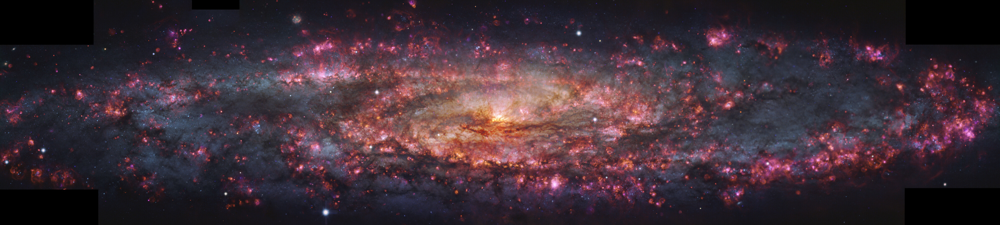

Notes of an astrophysics-apprentice
- Age of (cosmological) exploration (4 Jul '26)
- Do stars even wonder about us? (2 May '26)
- Cheshire Moon (28 Mar '26)
- The Galactic Mouse (4 Mar '26)
Mapping the Local Universe Large-Scale structure
General discussion of stellar multiplicity in the Milky Way
Peculiar observations of the "wet" moon in March 2026 and their explanations
The Mouse pulsar and its tail!